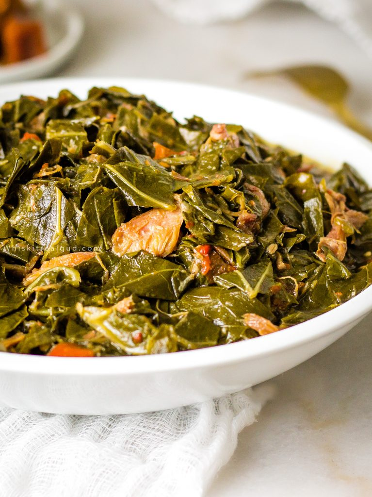

Collard Greens

Don't be fooled by the greenery. These greens are a savory delight
Dive in to this healthy bbq and thanksgiving crowd favorite
Ingredients
- 3 bunches collard greens
- 2 cups onion diced
- 4 garlic cloves minced
- 1 green pepper diced
- 1 sweet bell pepper diced
- 1 tbsp jalapeno pepper diced
- 2 lbs whole smoked turkey wings
- 1 tsp cajun seasoning (optional)
- 2-3 tsp crushed red pepper
- 2-3 tsp crushed red pepper
- 2 tsp garlic powder
- 3 cups chicken broth I used Better Than Bouillon
- 2 tbsp distilled white vinegar
- 2 tbsp granulated sugar
- salt for taste
- pepper for taste
How to cut collard greens
- Stack the collard greens in the same direction on top of the cutting board. Fold the leaves up. Then cut them up into two-inch squares a bunch at a time.
Instructions
- Cook the smoked turkey wings first. To a large pot or dutch oven, add 1 tablespoon of vegetable oil over medium heat. Add the green peppers, sweet red bell peppers, jalapeño, and onions. Saute until soft. Add the minced garlic and saute for one minute.
- Next, add the broth to the Dutch oven then add the crushed red pepper, garlic powder, onion powder, and cajun seasoning. Mix well. Add the smoked turkey wings. Simmer for an hour. If you want to use the Better than Bouillon chicken base please DO NOT ADD THE ENTIRE JAR! Make sure to read the instruction on the jar FIRST.
- Add the collard greens on top of the smoked turkey wings. Add the vinegar and sugar. Push the greens down and gently stir. The greens will seem like they won't fit but don't worry, they will wilt and reduce in size greatly as it hits the water. Once the greens are wilted and completely in the pot or dutch oven Cover and simmer for 1.5 -2 hours or until very tender and dark green and the meat has fallen off the smoked turkey wings.
- Remove the bones from the pot. Add salt and pepper and sugar to taste. Stir to combine. Serve immediately with your choice of sides like baked sweet potato, candied yams, cornbread, cranberry sauce, fried chicken, mashed potatoes, stuffing or mac and cheese.
- FYI...you'll notice leftover liquid in the pot. It's called potlikker or pot liquor. Serve the potlikker individually in small bowls. Some people like to sop their cornbread up with the potlikker. I'm one of those peoples. Potlikker also makes tasty soup or gravy.
Home Page